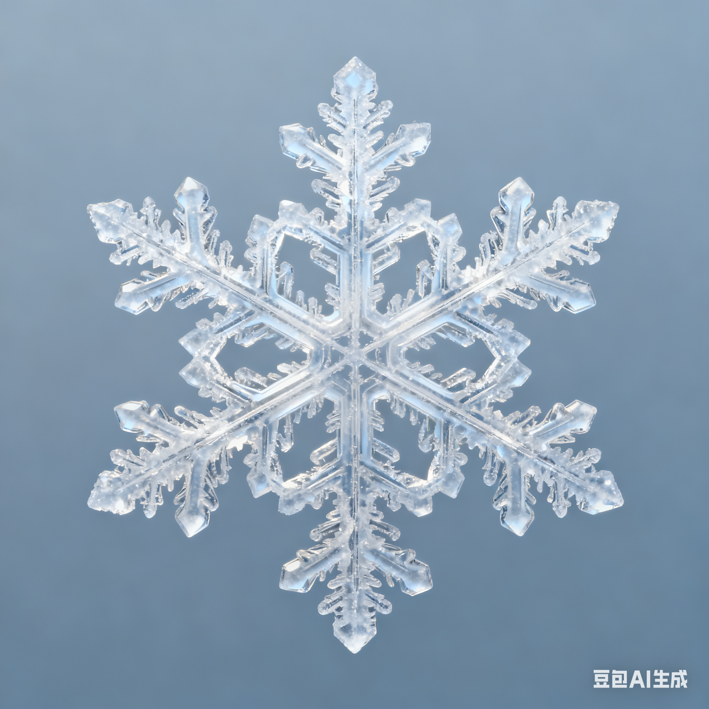

冬日科普合集 ❄️
1. 雪花为什么都是六角形？
水分子的结构超特别！当水蒸气凝结成冰时，水分子会按「正六边形」的规律排列～
每片雪花在下落过程中，温度、湿度都不一样，所以没有两片雪花是完全相同的，是不是很神奇？
2. 雾凇vs霜花，不一样哦！

💧 霜花：在窗户玻璃上形成，是室内水蒸气碰到冷玻璃直接凝结的；
❄️ 雾凇：在户外树枝上形成，是空气中的雾气遇到0℃以下的物体，凝结成的白色冰晶，也叫“树挂”～
3. 冬天呼出的“白气”不是气！

我们嘴里呼出的是温暖的水蒸气，遇到冷空气后，会快速凝结成无数个微小的小水珠～
这些小水珠聚集在一起，看起来就是白色的“气”，和霜花的形成原理是亲戚哦！
制作：赵思月